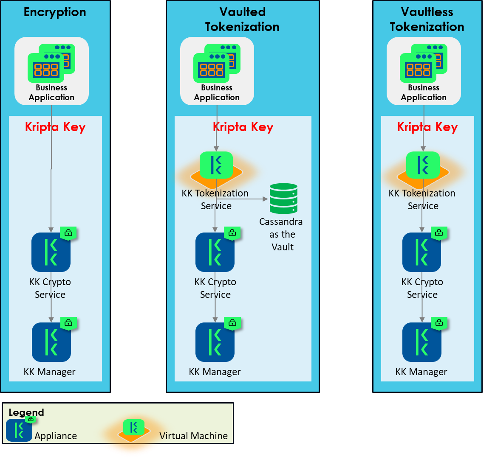

Protecting Data Confidentiality with Encryption, Tokenization, and Masking
Kripta Key provides options to cater various scenarios to protect data confidentiality, i.e., encryption, tokenization and masking. Despite of having same purpose, they use different approaches, and sometimes can be very subtle.
Definition
Data encryption is a process to transform sensitive data (plaintext) to unreadable form (ciphertext) by using a mathematical mapping (algorithm) and a secret key.
Data tokenization is a process to substitute sensitive data with benign ones (tokens). The substitution process can be vaulted or vaultless.
Vaulted tokenization generates tokens randomly and uses a vault (database) to store the mapping between sensitive data and the tokens. Since the tokens are generated randomly, there is no mathematical relationship between the sensitive data and its token.
Vaultless tokenization generates the token by transforming the sensitive data using an encryption algorithm.
Data masking is a process to hide some characters in a sensitive data by replacing them with a masking character (*). While data encryption and tokenization are reversible, data masking is not.
Format and length
Kripta Key encryption uses AES-256-GCM algorithm (authenticated encryption). It generates ciphertext, initialization vector (IV) and authentication tag in binary format despite the plaintext in ASCII, hence longer than its plaintext.
Kripta Key tokenization generates the tokens in the same format and length with the sensitive data.
Kripta Key masking also generates masked data in the same format and length.
Cryptographic Process
In Kripta Key, encryption is performed in a hardware-based secure environment using AES (†) algorithm with key length 256 bits and GCM mode of operation (AES-256-GCM), leveraging Intel SGX as the root of trust. While in-use, the encryption keys never leave the secure environment. At-rest, the encryption keys are protected with a key derived from combination of unique Intel root sealing key and Kripta Key digital certificate. While in-transit, the encryption keys are protected with TLS 1.3 where the TLS session key is generated and only used in the secure environment.
For tokenization, Kripta Key provides both vaulted and vaultless tokenization service.
Vaulted Tokenization Service: Kripta Key stores the mapping between the sensitive data and the tokens in its vault, which is an Apache Cassandra database. The tokens are randomly generated using Intel on-chip hardware random number generator. Kripta Key does not store the sensitive data as is, instead, encrypting it by using AES-256-GCM algorithm. Thus, even if the Cassandra database is stolen, the sensitive data in it are still protected.
Vaultless Tokenization Service: Kripta Key uses FF1 (⸸) algorithm to encrypt the sensitive data. Since encryption is directly used, then the vault is not needed to store the mapping. FF1 is chosen instead of AES because of its property as format-preserving encryption (FPE). However, do take note of security concerns:
FF1 (and FF3-1) algorithms are broken (‡).
NIST SP 800-38G recommends using random tweak for each sensitive data to increase the security, which means the tweak must be stored along with ciphertext, hence does not preserve the length. Since tokenization typically expects preservation of format and length, Kripta Key Vaultless Tokenization Service does not use the tweak for FF1 algorithm.
[NIST SP 800-38G Revision 1](https://csrc.nist.gov/pubs/sp/800/38/g/r1/ipd) requires (not recommends) one million minimum domain size to avoid ciphertext (tokens) collision. Kripta Key set minimum domain size to one billion, which means there are minimum length of sensitive data to tokenize, i.e. Alpha and Alphanumeric: 6 characters; Numeric: 10 characters. This limitation is also applicable for Vaulted Tokenization Service.
Security wise, Vaulted Tokenization Service is more superior as it does not use the broken FF1 algorithm. However its requires consideration of Cassandra deployment complexity.
Performance wise, Vaultless Tokenization Service is more superior as it does not require storages for token-value mapping, hence simpler deployment. However it uses FF1 algorithm that already broken.
(†) `NIST FIPS PUB 197, Advanced Encryption Standard, Nov 2001`__.
(‡) FF1 and FF3-1 algorithms have been broken by recent cryptanalysis researches. However, this is the only open and standardized format-preserving encryption available today. Non exhaustive list of references as follows:
Breaking the FF3 Format-Preserving Encryption Standard over Small Domains, July 2017
Three Third Generation Attacks on the Format Preserving Encryption Scheme FF3, March 2021
Linear Cryptanalysis of FF3-1 and FEA, June 2021
Data masking is part of Kripta Key Tokenization Service where it returns masked characters (*) to replace the hidden sensitive data.
Recommendation of Usage
There is no single panacea to solve problem likes data confidentiality. Kripta Key provides options to cater various scenarios.
Encryption is best used to protect data confidentiality for maximum and long term protection. In PDP era, data encryption must be part of application development blueprint (security by design), for example: personally identifiable information (PII) at-rest must be encrypted.
Tokenization can be used to protect data confidentiality where the protection duration is relatively short and the format and length must be preserved, for example to replace some part of credit card number with random numbers during a financial transaction. Another usage is to protect data confidentiality in legacy applications where the data format and length must be preserved. For the latter case, since the data must be stored for long time, it is best to use Kripta Key Vaulted Tokenization Service for maximum protection because it does not use FFX algorithm.
Masking is used to protect data confidentiality in a manner that reversing it back to the original value is not needed, for example to hide some part of user id, credit card number or telephone number in application log files, or in data mart for big data analysis.
Deployment Options
Deployment of Kripta Key components depends on the chosen scenario as depicted in the diagram below.
Note that the above deployment diagram is over simplified to emphasize for data confidentiality protection use case. It does not include compulsory enterprise grade resiliency aspects such as load balancing, high availability, clustering, Cassandra database replication factor, sharding and consistency level.
For data masking scenario, it uses the same option as Vaultless Tokenization service.
Summary
The table below summarizes the difference between encryption, tokenization and masking in Kripta Key.
Encryption
Method: AES algorithm with key length 256 bits and GCM mode of operation.
Reversibility: Yes
Format: Binary
Length: Longer than the plaintext, i.e. 16 bytes IV + 16 bytes tag + ciphertext.
Usage: Maximum and long term protection.
Deployment: KK-Crypto Service
BCP Concern: Backup the keys
Vaulted Tokenization
Method: Substituting sensitive data with random token.
Reversibility: Yes
Format: No changes
Length: No changes
Usage: Short term protection such as in a transaction or for legacy applications.
Deployment: KK Tokenization Service and Cassandra database. High availability, clustering, replication factor, sharding and consistency level of Cassandra database must be considered during deployment
BCP Concern: Backup the keys and Cassandra database
Vaultless Tokenization
Method: Encryption with FF1 algorithm.
Reversibility: Yes
Format: No Changes
Length: No Changes
Usage: Short term protection such as in a transaction.
Deployment: KK-Tokenization Service
BCP Concern: Backup the keys
Masking
Method: Replacing some characters with mask character (*).
Reversibility: No
Format: No Changes
Length: No Changes
Usage: Where reversing to original value is not needed such as log files and data mart.
Deployment: KK-Tokenization Service
BCP Concern: -